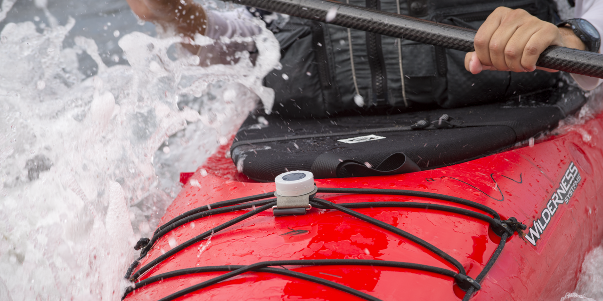
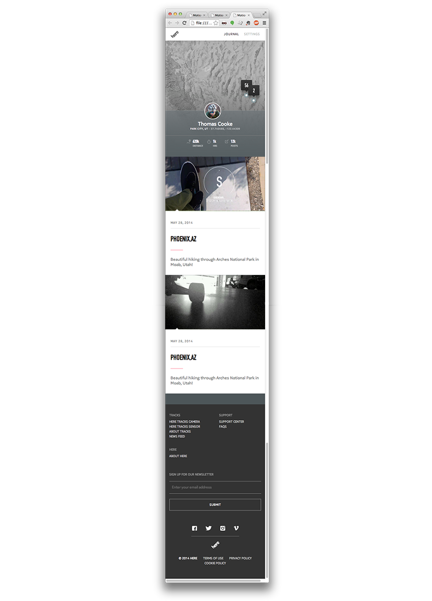
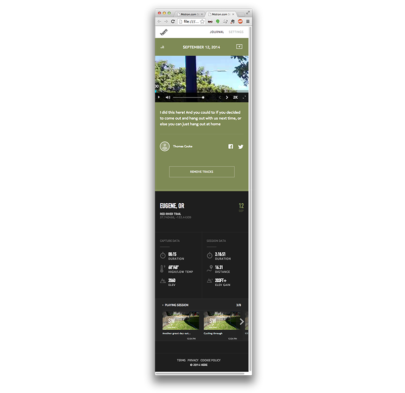
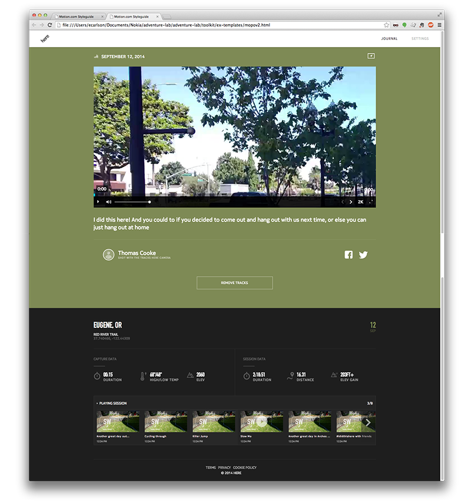
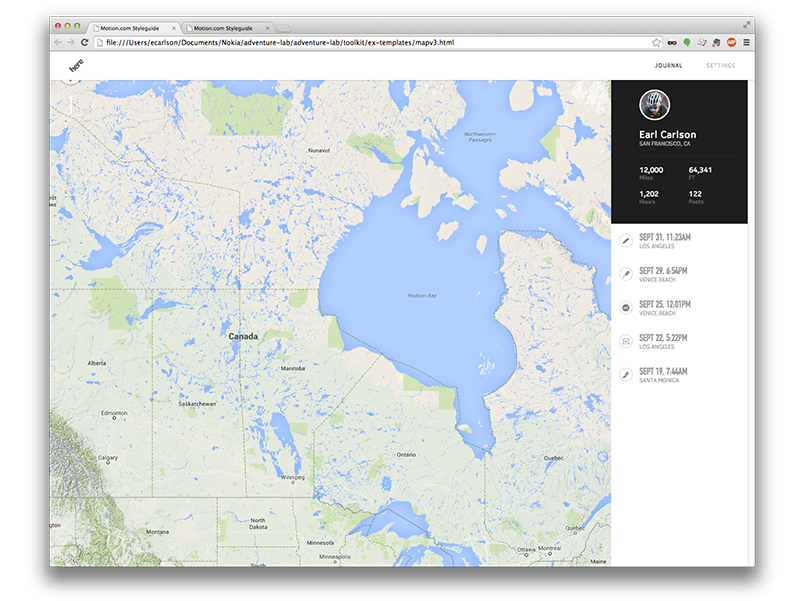

ADVENTURE LAB
Our team believes that the more time you spend outdoors, the happier and healthier you will be. Our entire team enjoys a range of active sports – skiing, surfing, cycling, climbing, etc – and are passionate about helping others get out and enjoy nature.
Concepting
So we asked ourselves, what can we do to encourage people to get out more? How do you create a positive feedback loop for people to encourage others to get outside? What's the one thing everyone has after coming back from an adventure?
This became our guiding light. If we could create a platform for people to create and share their outdoor stories, those people would inspire others to get outdoors.
Now on to the tougher questions. What is this platform? Is it hardware? Software? An App? What’s possible? What are the limitations? Will a massive multinational organization go for something like this?
Our ambitions were big, brave, and a bit wild: 80 people, 3 studios, 2 devices, an iOS app, a web platform, a custom map layer, and a cloud backend to hold it all together. Many long hours, sleepless nights, and fun adventures led to us making it happen.
It's like snapchatting for the outdoors
So we asked ourselves, what can we do to encourage people to get out more? How do you create a positive feedback loop for people to encourage others to get outside? What's the one thing everyone has after coming back from an adventure?
This became our guiding light. If we could create a platform for people to create and share their outdoor stories, those people would inspire others to get outdoors.
Now on to the tougher questions. What is this platform? Is it hardware? Software? An App? What’s possible? What are the limitations? Will a massive multinational organization go for something like this?
Our ambitions were big, brave, and a bit wild: 80 people, 3 studios, 2 devices, an iOS app, a web platform, a custom map layer, and a cloud backend to hold it all together. Many long hours, sleepless nights, and fun adventures led to us making it happen.
- 


Sharing Pics
So we asked ourselves, what can we do to encourage people to get out more? How do you create a positive feedback loop for people to encourage others to get outside? What's the one thing everyone has after coming back from an adventure?
This became our guiding light. If we could create a platform for people to create and share their outdoor stories, those people would inspire others to get outdoors.
Now on to the tougher questions. What is this platform? Is it hardware? Software? An App? What’s possible? What are the limitations? Will a massive multinational organization go for something like this?
Our ambitions were big, brave, and a bit wild: 80 people, 3 studios, 2 devices, an iOS app, a web platform, a custom map layer, and a cloud backend to hold it all together. Many long hours, sleepless nights, and fun adventures led to us making it happen.
So we asked ourselves, what can we do to encourage people to get out more? How do you create a positive feedback loop for people to encourage others to get outside? What's the one thing everyone has after coming back from an adventure?
This became our guiding light. If we could create a platform for people to create and share their outdoor stories, those people would inspire others to get outdoors.
Now on to the tougher questions. What is this platform? Is it hardware? Software? An App? What’s possible? What are the limitations? Will a massive multinational organization go for something like this?
Our ambitions were big, brave, and a bit wild: 80 people, 3 studios, 2 devices, an iOS app, a web platform, a custom map layer, and a cloud backend to hold it all together. Many long hours, sleepless nights, and fun adventures led to us making it happen.
- 

- 
- 
- 

The Moment it all came together
I contributed to a small team that built a fully functioning single-page application that will act as a beacon for Wikia throughout 2015. While there are no illusions that this is the perfect solution, the team knew the best way to affect the culture at Wikia was to show what is possible. Below is a video of the final product of our work.
Now on to the tougher questions. What is this platform? Is it hardware? Software? An App? What’s possible? What are the limitations? Will a massive multinational organization go for something like this?
Our ambitions were big, brave, and a bit wild: 80 people, 3 studios, 2 devices, an iOS app, a web platform, a custom map layer, and a cloud backend to hold it all together. Many long hours, sleepless nights, and fun adventures led to us making it happen.
Abridged Credits
Rhys Newman (Design Studio Lead)
Charlie Sutton (Creative Director)
Duncan Burns (Creative Director)
Nick Foster (Creative Director)
Olly Farshi (Design Lead)
Brody Larson (Design Lead)
Ben Cline (Design Lead)
Earl Carlson (Interactive Designer)
Mark Fulks (Engineering Studio Lead)
Serge Eby (Engineering Lead)